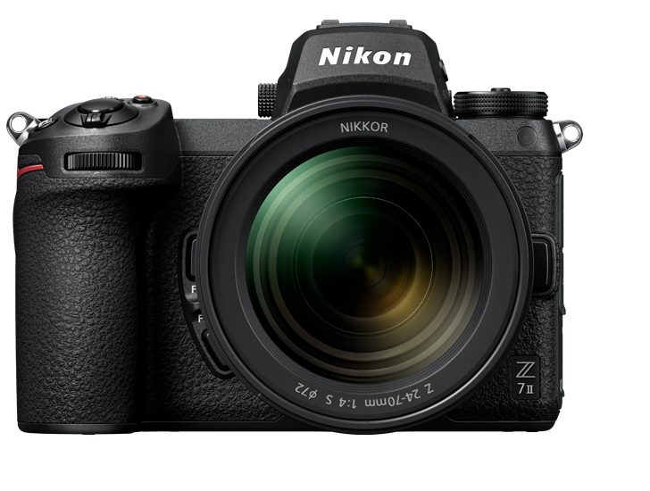
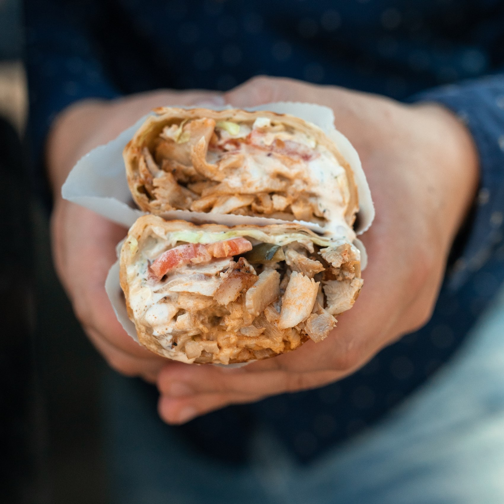

Aparatul de fotografiat
Bine ați venit pe siteul meu!Acum vom descoperi tainele aparatului de fotografiat!

Ce este un aparat de fotografiat?
Ca și definiție de bază, acesta este un instrument menit pentru a capta o imagine.
Acesta este compus din:
- „corpul” aparatului
- obiectivul
- părțile suplimentare
-adăpostește părțile fragile (diafragma, senzorul)
-cuprinde lentile pentru focalizare
-bliț, baterie externă, buton declanșare extern
Fotografie sau Videografie?
Fotografia și videografia sunt două ocupații (/activități artistice) conexe, care au un lucru foarte important în comun: captarea imaginilor.
Aparatele de fotografiat pot fi folosite și pentru videografie, deși oferă o calitate puțin redusă față de cele construite special pentru acest scop
Galerie mică
Aceste sunt niște „opere” ce aparțin fotografiei, respectiv videografiei:
|  |  |
|---|


Dacă doriți să vedeți și alte informații despre acest instrument, apăsați aici.